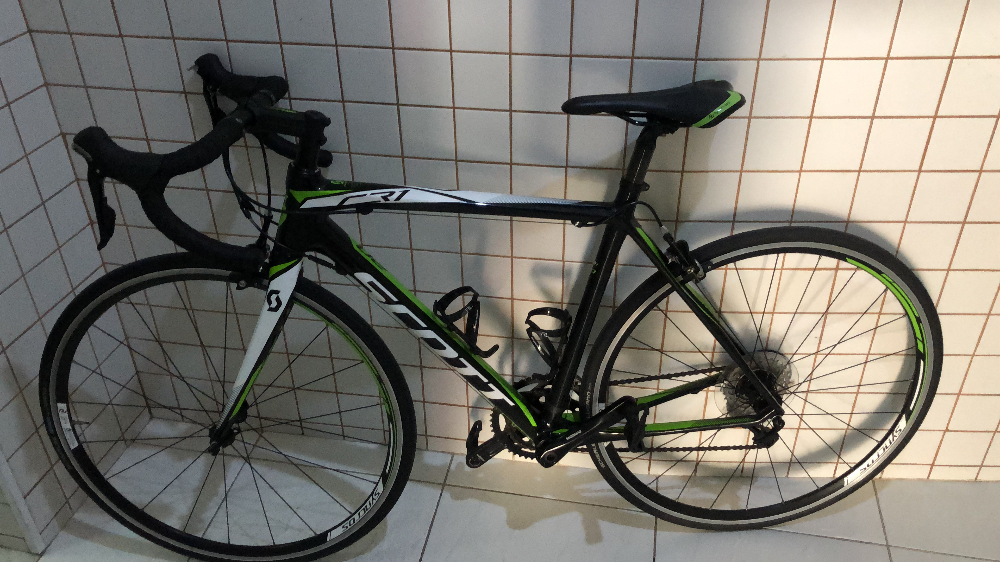
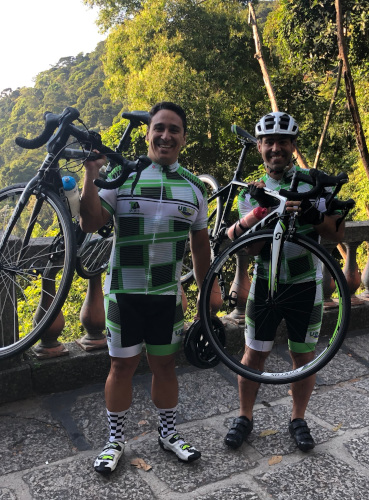
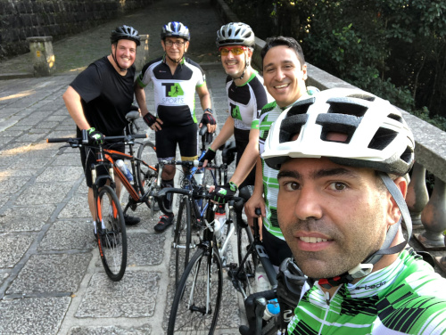

11 - Simulado
Já havia falado com o Tobias sobre a ideia de fazer o RioTriathlon na segunda quinzena de março e uma Meia Maratona (S21) em julho, mas não senti muita confiança na reação dele. De qualquer forma teria um simulado, junto com a acessória da Márcia Ferreira (MF Triathlon) no meio de fevereiro. Vamos ver como eu iria me sair.
Confesso que uma das coisas que eu mais gostei foi de usar o macaquinho de triathlon, deu a sensação que eu realmente era um triatleta.
Mas há uma diferença grande em parecer e ser.
O “treino” aconteceu no Aterro, que estava fechado para a realização de uma corrida. Natação, 750m no mar, 24 km de bike e 5,1km de corrida, distância adaptadas para os retornos no Aterro do Flamengo.
Entrei no mar sem pressa, fui literalmente o último a entrar, quase 5 minutos depois de todos (pude conferir no vídeo que fizeram). nadei bem, fiz em 20 min incluindo o tempo que eu fiquei parado na areia.
Transição para o ciclismo feita, sapatilha sem meias para acostumar.
Acredito que foi a minha pior parte 0:56:00, em alguns momentos tive que diminuir muito a velocidade devido a montagem dos pontos de hidratação da corrida.
A terceira parte era a que eu mais temia, mas acabei me surpreendendo com uma corrida para 30′ 43″ Pace médio de 5:58.
O Euzir me deu força no pedal e no final da corrida, mas acho que esse último foi só para sair na foto. Hehehe.
Simulado realizado, e a confiança para fazer a etapa do RioTriathlon aumentou.
(Treino dia dd/mm/aaaa)
dd/mm/aaaa
12 - Inscrição no RioTriathlon
Simulado realizado, achei que as inscrições para a prova de março já tinham se esgotado, até que alguém no grupo de WhatsApp, para motivar os outros, enviou a inscrição, não pensei duas vezes e fiz a minha, R$ 400,00 muito acima do valor das inscrições das corridas de rua, mas também a infraestrutura é bem maior.
Falei da inscrição para o Tobias com a seguinte colocação: “terminar eu vou, só não sei em quanto tempo”.
Seja o que Deus quiser, agora só tinha que treinar mais para melhorar o pedal.
Treino dia 19/02/2019
(25/03/2019)
13 - Primeiro Abandono de Treino
Quinta feira antes do carnaval, o treino era pedal no rolo mais tiros de 1km de corrida.
Fiz um pedal de médio para fraco já que alguma coisa não estava ajustada no rolo, e fui para a corrida, no primeiro tiro, me senti mal, estava ficando gripado, e resolvi abandonar o treino e não fui trabalhar.
Treino dia 28/02/2019
Na sexta fiquei de “molho” em casa. No sábado acordei melhor e fui fazer o treino de 8km no aterro, mas com a ideia na cabeça de se precisar para eu ia parar.
Com o tempo meio chuvoso, com o “descanso” de um dia, acabei fazendo o meu melhor tempo para essa distância, e ainda tive que desviar de um bloco de carnaval.
8km – 52:28 – Pace de 6:32 min/km
Treino dia 02/03/2019
(25/03/2019)
14 - Preparativos
Última semana antes da prova chegando e começaram os preparativos. Levei a roupa de Neoprene para fazer ajustes de tamanho, bike para a revisão.
Longão de sábado, 10km, mais uma vez o tempo estava chuvoso, e consegui fazer um tempo muito bom, pelo menos para mim. 1:02:46.
Tobias achou um tempo bom também.
Terminei a prova fazendo os 5,32 km em 35:24, mas o importante foi completar e correr com amigos.
Treino dia 16/03/2019
(25/03/2019)
15 - Semana da Prova, mas nem tudo estava bom.
Semana da prova chegando, com um final de semana agitado, a minha filha (9 meses) teve uma febre no domingo, achamos que poderia ser o dente nascendo ou uma gripe qualquer.
Na segunda feira eu estava no trabalho e a minha esposa me ligou pedindo para ir com elas no pronto socorro, para ver se estava tudo bem com a Ana Carolina.
Fomos para a emergência no Pro-criança achando que ia receitar um xarope para tosse e no máximo um antibiótico. Quando eu a peguei no colo escutei um “chiado”, isso não era um bom sinal.
A médica disse que iria deixa-la em observação e fazer um remédio por inalação o que iria durar no máximo uma hora. Deixei-a com a minha esposa e fui buscar o meu filho mais velho na escola.
Fiquei esperando a minha esposa voltar pra casa, mas o tempo passava e nada. Foi quando ela me ligou e pediu para eu voltar para o hospital pois nossa filha iria ficar internada. Não entendi nada.
Era segunda feira, ela não dava a impressão de estava muito caidinha, pensei que eu ficaria 2 dias, no máximo 3, sem treinar e faria a prova no domingo sem maiores problemas.
Infelizmente eu estava enganado, e ela continuava internada na UTI no domingo da prova. Sem cabeça, dormindo muito mal no hospital, não tive condições nenhuma de fazer a prova.
(18/03/2019 a 28/03/2019)
Fazendo um parêntese para explicar quando comecei e o porquê de escrever esses relatos.
Comecei no final de fevereiro simplesmente para não perder as etapas dos acontecimentos, e “treinar” a elaboração de texto, quase como um diário (até o dia de hoje esses textos são privados) fui escrevendo sobre acontecimentos passados e hoje cheguei ao final das lembranças. Não tenho ideia de como será os acontecimentos daqui para frente.
(25/03/2019)
16 - Voltando….
Como já escrevi, passei 10 dias com a minha filha no hospital, onde eu dormi pouco, não treinei nada e me alimentei mal. Voltei a correr numa quinta-feira, fiz um treino leve de 5km para 35:00
Treino dia 10/01/2019
Mesmo estando gripado e bastante entupido, resolvi fazer o Treinão da T4 no sábado, 8,5km do Jardim de Alah até a praia de Botafogo. Foi bem difícil acabei com um Pace de 7:02min/km, e uma sensação de cansaço que me fez diminuir a velocidade e inclusive caminhar lá pelo km 5.
De qualquer forma foi um sábado bem agradável correndo com amigos e de bônus, encontrei com a minha esposa, as crianças e até a minha cachorra me esperando no final.
Essa semana a planilha de treino está um pouco mais leve, para compensar a volta.
Treino dia 30/03/2019
(30/03/2019)
17 - Para não deixar de escrever
Já disse anteriormente que esses textos são uma espécie de diário, e para me forçar a escrever.
Por isso não quero deixar de relatar os acontecimentos e as expectativa para o futuro. Mesmo não tempo muitas novidades. Vou tentar relatar aqui o ocorrido em ordem cronológica, para eu não me perder.
Domingo dia 7 de abril fiz um treino longo de ciclismo 42km em 2 horas. Acabou sendo mais um passeio do que um treino, fiquei muito tempo na ciclovia, e com velocidade baixa, mas valeu para me acostumar com um tempo “longo” pedalando.
Treino dia 07/04/2019
Basicamente estou treinado para aumentar o volume de corrida, no sábado eu fiz 11 km. Só de pensar que ainda faltariam 10km se eu estivesse fazendo a Meia Maratona fiquei desesperado, mas de qualquer forma ainda faltam 15 semanas para o S21, uma corrida que vai ser do Leblon até o aterro, a vantagem do percurso é que vai ser sem subida.
Amanhã tem APCC, os treinos no aterro foram interrompidos depois devido às fortes chuvas.
Foi uma semana bem conturbada, mas acabei conseguindo ajustar o treino na academia, e ainda um treino de natação na piscina. Procurei uma serie de treinos na internet e fiz, acho que foi melhor que ficar nadando direto sem variação. Acabei nadando 2.300 m em 1h e 28 min.
Para quem pensava que não tinha muita coisa para escrever acabei me surpreendendo.
Treino dia 07/04/2019 e 13/04/2019
(15/04/2019)
18 - Bike Nova
Na segunda feira eu estava preparando a bike para pedalar de madrugada e vi que o pneu estava furado, ainda bem que eu tinha comprado uma câmara e material para trocar.
No dia do treino fiquei um tempo no pelotão. Uns 10 minutos fortes e mais 5 no muito forte, mas depois de uma subida não consegui mais acompanhar o ritmo. Considerei que a bicicleta estava dificultando um pouco. Conversei com o treinador no mesmo dia, e disse da minha ideia de trocar a Caloi 10 para uma bike melhor. Olha como são as coisas, na quarta mesmo um colega de treino postou no grupo de WhatsApp um anúncio de uma bike usada, mas bem nova, e que me atenderia bem.Pensei muito se valeria a pena.
Como diria o personagem da Escolinha do Professor Raimundo, "por que comprá-la, por que não comprá-la. Comprei a a..." (sic).
Hoje estou de bike nova e doido para treinar e ver se realmente a minha performance vai melhorar.
Treino dia 23/01/2019
(22/03/2019)
19 - Para o Alto e Avante.
Que título besta. Hahaha, mas foi mais ou menos assim que eu me senti hoje. Com a bike pude me aventurar nas “montanhas” do Rio. Hoje foi a “temida” Vista Chinesa e a Mesa do Imperador.
Achei muito importante ir com um guia mais experiente. Pedalar com os pés presos  dá uma aflição grande, sabendo que não é só colocar o pé no chão se tiver algum problema.
É claro que eu não consegui subir sem uns tombos, e como sempre são os mais bestas. Voltar a pedalar na subida e clipar é bem complicado.
No final consegui subir, nem me preocupei com o tempo.
O que é mais complicado é a descida visto que a queda faria um estrago feio.
Adiei essa subida por muitas vezes, principalmente pela bicicleta, com certeza não conseguiria subir usando a Caloi 10.
Agora muito mais subidas virão.
Treino dia 29/01/2019
(23/03/2019)
Treino dia 23/04/2019 - (23/04/2019)
20 - UB515
UB515 – Brasil Ultra Triathlon. Calma, não estou pensando em fazer essa prova não, longe de mim!!!
Para saber o que é, o UB515 é a prova de Ultra Triathlon que está acontecendo em Ubatuba. São três dias de prova, primeiro com 10km de natação e 145km de ciclismo, o segundo 270km de ciclismo e o terceiro dia fechando com duas maratonas (84,4km).
Ok!!! É uma prova foda, só para alienígenas do triathlon, mas por que eu estou falando isso agora? Acontece que o meu treinador está fazendo essa prova nesse exato momento, começou hoje as 6:00.
Acompanhei um pouco a preparação dele para essa prova e pude ver como deve ser a dedicação do atleta para esse tipo de prova, que guardando as proporções, tento me inspirar um pouco para os meus treinamentos.
Treino 26/04/2019)
(26/04/2019)